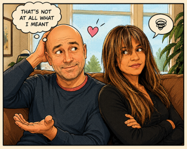
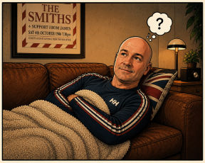

I used to think mastering AI was mostly about technology.
Turns out, it was mostly about learning how to communicate clearly without causing accidental confusion — a skill long-term relationships teach exceptionally well.

Over the years, I've learned that communication is rarely just about words. It's about clarity, context, tone, timing, and understanding what the other person actually means — not just what they technically said.
Which, as it turns out, is also exactly how AI works.
When I first started using AI tools, my prompts were terrible.
I'd type things like: “Make this better.”
And the AI would return something completely different from what I had in mind.
That felt strangely familiar.
Because years earlier, I had already learned that saying:
“I don't care where we eat” does not always communicate useful information.
Apparently, “I'm flexible” and “I have thoughtfully considered options” are not the same thing.
I learned early on that saying “If you need...” or “I'm fine with it” can trigger consequences that occasionally still haunt me now.
There is probably no greater training for prompt engineering than having to clarify:
“No, when I said the waitress was nice, I meant she efficiently delivered the food and was polite to you.”
Yes, some prompts do indeed require immediate revision.
One of the things relationships teach you is that people are not mind readers.
AI isn't either.
The more context you provide — what you want, what you don't want, the tone you're aiming for, and what success looks like — the better the outcome.
That applies equally to:
I've also learned that communication is heavily influenced by delivery.
For example:
“Are you upset?”
and
“Hey, you seem stressed — want to talk?”
AI prompts work the same way.
A prompt that says: “Write a professional email” produces one result. But: “Write a warm, professional email that sounds confident but approachable” produces something dramatically better.
The other thing both relationships and AI have taught me is that getting things right often takes refinement.

Prompt engineering is iterative:
That's not failure. That's just how good communication works.
Version 1.0:
“Calm down, you're overreacting.”
- System crash!
Version 2.0:
“I can see why that bothered you”
- Stable release candidate.
AI hallucinations happen when the model confidently fills in missing information. Humans do this too.
For example, I used to say things like:
“Maybe we could do something this weekend.”
In my mind, this meant:
- thoughtful flexibility
- openness
- collaboration
But apparently, in real-world relationship translation, it occasionally sounded more like:
“I have put absolutely no thought into this.”
or worse,
“I am now assigning all logistical responsibility to you.”
AI works exactly the same way.
If you type:
“Create a website layout”
the AI has to guess:
- style
- mood
- colors
- purpose
- audience
- layout
- functionality
And just like vague weekend plans, the results can become unpredictable very quickly.
So now instead of: “Want to do something Saturday?”
I try: “How about dinner around 6, I am thinking steak, then a walk if the weather’s nice?”
Which turns out to work significantly better for both relationships and AI prompts.
AI hallucinations often begin the same way relationship misunderstandings do: when too much is left open to interpretation. Both relationships and AI become dramatically more stable when nobody is forced to "just figure out what you meant."
Precision doesn't remove personality or spontaneity. It just reduces the chances of everyone inventing their own version of reality.
This is perhaps why many men eventually communicate like enterprise software documentation. Not because they want to... Survival requires it.
The funny thing is that AI has made me realize how much strong relationships depend on the same skills:
So while I may have learned prompt engineering from technology, I probably learned communication discipline from the relationship first.
And honestly, that has been far more valuable.
All models struggle with emotional context but they're still nowhere near as advanced as a woman detecting a tonal shift from a few words sent by text at 11:15 PM.
In the end, good prompting- whether with AI or relationships - is really about empathy, precision, timing, and understanding what the other person needs. Technology may improve communication tools, but relationships are still where most of us actually learn how to communicate.
Leave a comment